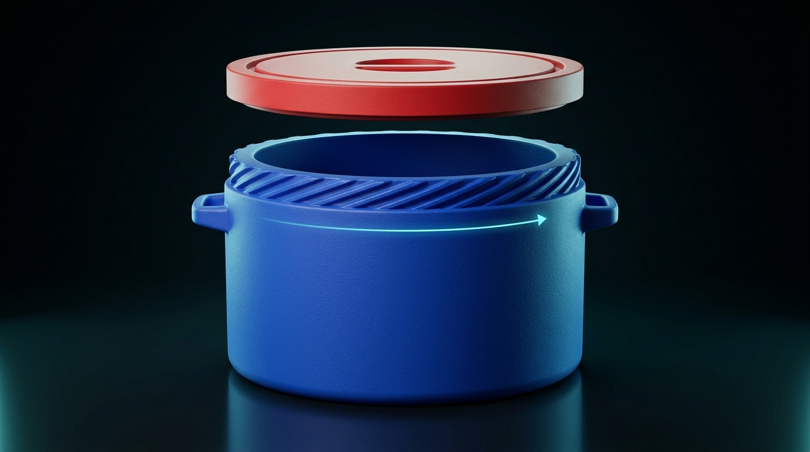

20-Start Spiral Helix Collar Overview
Twenty parallel starting threads placed every 18° around the 24-inch collar catch immediately at any drop-in orientation and seal in 1/20th turn.
Patent-Pending Engineering Lab · 24.0″ OD Collar
Around the 24-inch rotomolded rim sit 20 parallel spiral starting threads that engage simultaneously in 1/20th of a circle. Flip the flush External Vertical Anti-Rotation Deadbolt down 12 mm into the base collar notch so stacked tiers above twist off without unscrewing the lid underneath.

Interactive Mechanical Schematic
Grab the 24-inch bayonet collar directly or use the precision slider below to watch the 20 helical ramps draw down and crush the dual gasket. Then test twisting an upper stacked tier counter-clockwise with the vertical deadbolt raised versus pinned.
Scrub continuously from 0° drop-in to 18° locked stop (100% Hermetic Seal).
Push DOWN 12 mm into the lower collar receiver notch to anchor the middle lid against upper-tier unscrewing torque.
Apply counter-clockwise unthreading torque to the upper Alpine White tier and observe what happens to the middle lid.
6-Angle CAD Cutaway Inspection
Select any cutaway view to open the full-resolution CAD inspector with keyboard navigation and complete mechanical callouts.
Twenty parallel starting threads placed every 18° around the 24-inch collar catch immediately at any drop-in orientation and seal in 1/20th turn.
Modified 30° stub-buttress helical ramps at a shallow 4.94° pitch deliver an 11.5:1 axial clamping advantage across all 360 degrees.
Recessed flush into the Patriot Red lid wall, flipping the tactile deadbolt slider UP clears the Patriot Blue receiver slot for 18° removal.
Pushing the external slider 12 mm straight down drives the locking tongue into one of 20 aligned base receiver keyways (420+ ft-lb lock).
Twisting an upper Alpine White cooler counter-clockwise removes only the upper tier—because the anchored lid below physically cannot back out.
Decoupled concentric load paths: internal 20-start threads carry vertical tension while the outer vertical deadbolt absorbs rotational shear.
Production CAD Documentation · U.S. Patent Pending
Download the dimensioned cross-section engineering drawings covering 5 mm UV-8 LLDPE wall geometry, 20-start helical pitch callouts, and 12 mm deadbolt receiver clearances.
Closure Architecture Benchmark
Eliminating protruding elastomer straps removes wear points, snag hazards, and uneven front-only clamping across the entire modular tower.
Rubber T-Latch: Two-handed pull, stretch, and snap across dual external latches (8–12 seconds with pinch hazard).
Rubber T-Latch: Protruding rubber loops and exterior keeper brackets catch on truck bed rails, boats, and brush.
Rubber T-Latch: Cannot anchor mid-stack lids against upper tier rotation or unstrap middle chests without dismantling the tower.
Rubber T-Latch: Point-loads gasket only at two front latches while rear hinges and side spans flex unevenly.
Rubber T-Latch: UV-exposed elastomer straps dry-rot and snap; exposed hinge pins and brackets corrode in salt spray.
| Engineering Parameter | Specification | Mechanical Advantage & Purpose |
|---|---|---|
| Thread Architecture | 20-Start Parallel Helix | Engages at 20 points around the 24.0″ OD simultaneously; never cross-threads on drop-in. |
| Angular Pitch & Turn Arc | 18.0° (1/20th Circle) | Maximum 9° blind indexing; seals tight with 3.64″ (92.5 mm) of linear rim travel. |
| Helix Ramp Lead & Angle | 8.0 mm Draw / 4.94° Slope | 11.5:1 mechanical force multiplication for even 360° dual EPDM + silicone gasket compression. |
| Vertical Slider Throw | 12.0 mm Axial Stroke | UP permits free 18° lid twist; DOWN keys the lid skirt directly into the lower collar rim. |
| Collar Receiver Keyways | 20 Slots (Every 18.0°) | Guarantees positive deadbolt alignment at every possible 20-start thread lock stop. |
| Rotational Shear Rating | 420+ ft-lbs (570 N·m) | Prevents lower lids from backing out when twisting an upper stacked tier counter-clockwise. |